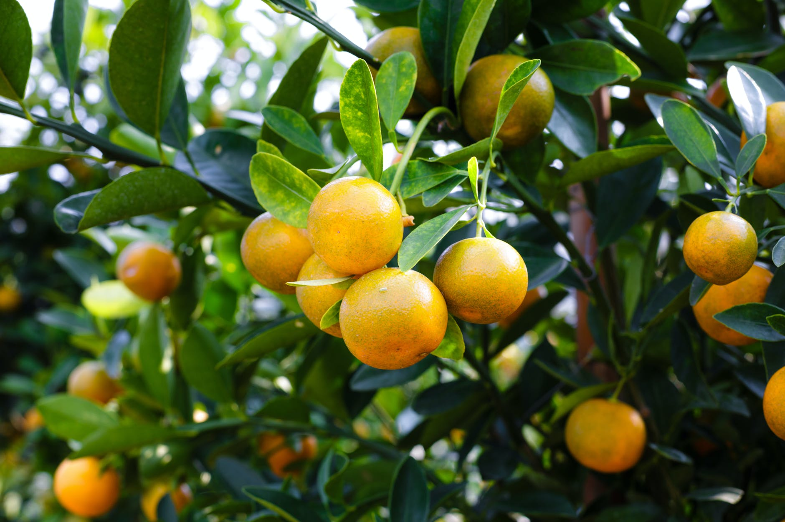
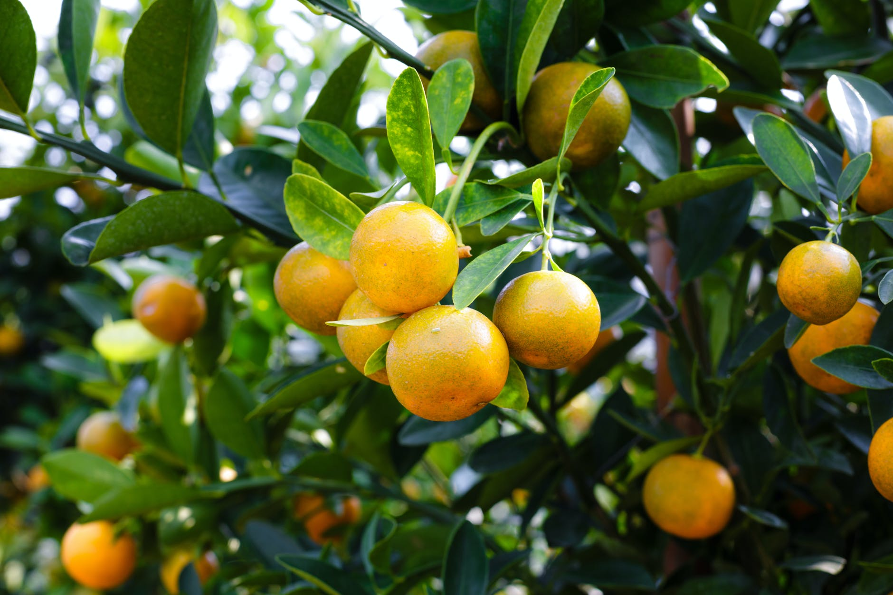

ORGANIC FOOR IS
GOOD FOR HEALTh
Agriculture is the science and art of cultivating plants and livestock.
Agriculture was the key
development in the rise of sedentary human
civilization

Agriculture is the science and art of cultivating plants and livestock.
Agriculture was the key
development in the rise of sedentary human
civilization

Agriculture is the science and art of cultivating plants and livestock.[1]
Agriculture was the key
development in the rise of sedentary human
civilization, whereby farming of domesticated
species
created food
surpluses that enabled people to live in cities. The history of agriculture
began
thousands of years ago
In the Middle Ages, both in the Islamic world
and in Europe, agriculture transformed with
improved
techniques and the diffusion of crop
plants, including the introduction of sugar.
In the Middle Ages, both in the Islamic world
and in Europe, agriculture transformed with
improved
techniques and the diffusion of crop
plants, including the introduction of sugar.
In the Middle Ages, both in the Islamic world
and in Europe, agriculture transformed with
improved
techniques and the diffusion of crop
plants, including the introduction of sugar.

Agriculture is the science and art of cultivating plants and livestock. Agriculture was the key
development
in the rise of sedentary human civilization


 



Our objective is to help you to grow
your business and build
competitive
advantages to ensure
your continued success in the
industry. And, that makes us the
only consultant you can
count on
anytime.